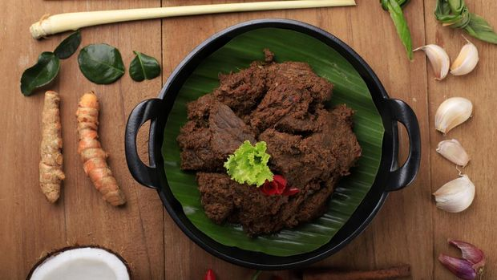

Resep Bumbu Rendang Daging Sapi
Bahan-bahan :
- 1 kg daging sapi.
- 1 liter santan kental dari 3 butir kelapa (perasan pertama tanpa air).
- 550 gram kelapa parut, disangrai sampai kecokelatan.
- 5 lembar daun salam.
- 1 lembar daun kunyit.
- 10 lembar daun jeruk.
- 5 batang serai.
- 1/2 batang kayu manis.
- 3 butir cengkeh.
- 2 sdt garam.
- 1 buah kembang lawang.
Bumbu Halus :
- 65 gram bawang putih.
- 125 gram bawang merah.
- 15 gram kunyit.
- 35 gram jahe.
- 75 gram lengkuas.
- 35 gram kemiri.
- 1/2 sdt lada bubuk.
- 1 sdt ketumbar.
- 1 buah kapulaga.
- 1/4 buah pala.
Cara Membuatnya :
- Pertama-tama, tumis bumbu halus dan kelapa parut sangrai. Aduk rata.
- Kemudian, masukkan daun salam, daun jeruk, daun kunyit, dan serai. Masak hingga wangi.
- Setelah itu, masukkan daging. Aduk rata.
- Tuang santan. Aduk rata.
- Masak rendang dengan api kecil hingga rendang mengering. Rendang daging sapi siap kamu sajikan untuk acara spesial.